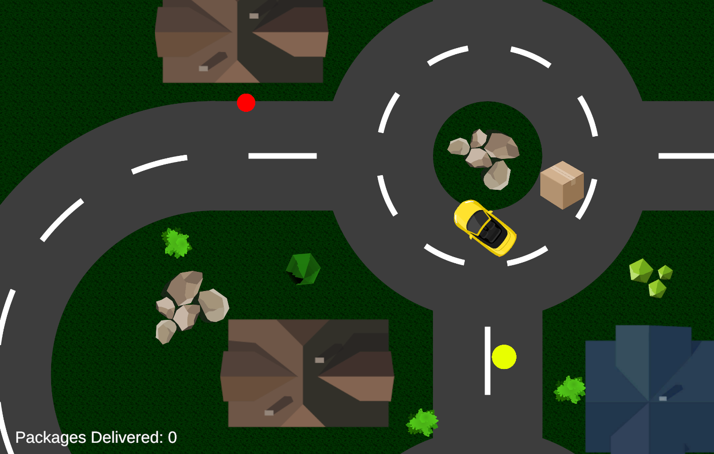
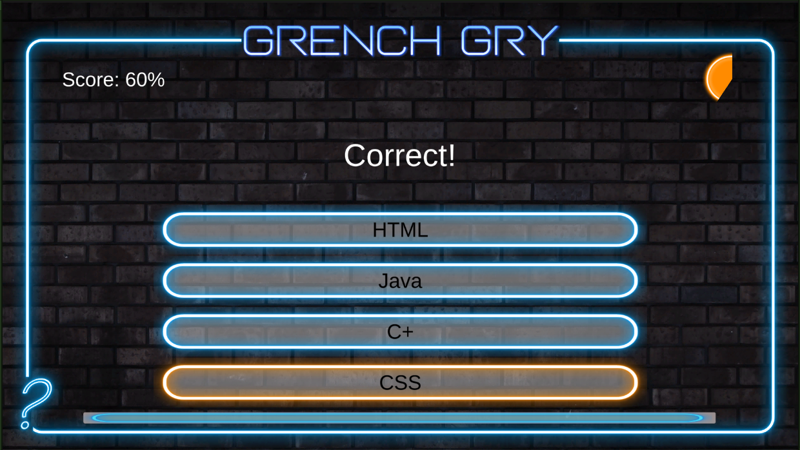

This site is an informational page highlighting some of my projects that
I have completed over the months.
Other information will also be provided on this page, feel free to check
it out!
Reinventing the Wheel was a project done by Charlie Van Abbema, and
myself.
The idea of this project was to create a
Nuget Package that
people would find useful by better understanding how default functions
work and recreating them for programmers to use in their projects.
Link to Nuget Package
here.
Link to the GitHub page
here.
The delivery driver lab consisted of creating a drivable car that picks up "deliveries" and required the player
to return the delivery to a specific area to score a point.
Although simple sounding, this game introduced velocity, player controls, interacting with objects, and more new
topics that would help in later game development.

The code snippet defines what should happen to
the player
when
the player interacts with an object with the script.
This snippet is a part of a longer piece of code, but this small piece of code detects whether or not the player
has successfully returned a package.
If the tag of the object is "Customer" and the player has a package while driving over the delivery zone,
the total delivered amount will update, the car will change colors, and
the
boolean
"hasPackage" will become false,
meaning the player can now retrieve another package.
if (other.tag == "Customer" && hasPackage == true) {
totalDelivered++;
Debug.Log($"You delivered: " + totalDelivered + " packages.");
packageObtained.text = $"Packages Delivered: " + totalDelivered;
spriteRenderer.color = noPackageColor;
hasPackage = false; }
The snowboarder lab lets the player simulate snowboarding on a snowhill.
By using the left and right arrow keys, the player could tilt the player forward and backwards in hope of making
it to the end of the level.
The quiz master lab was a simple game for learning switching scenes in Unity, but also a chance to create a
simple quiz for fun.

void GetRandomQuestion() {
int index = Random.Range(0, questions.Count);
currentQuestion = questions[index];
if (questions.Contains(currentQuestion)) {
questions.Remove(currentQuestion); } }
Name: Blair P. Ciolk
Time Survived: 16 years, 8 months
Grade: 11th
Ever since I was young, I have wanted to create games, but could never find a class or instructor until now.
In my free time, I enjoy playing games such as Far Cry and Just Cause. I love many different types
of music but I
specifially love $uicideBoy$.
An interesting fact some people may or may not know about me is that I had open heart surgery in the fifth
grade, replacing my inadequate pulmonary valve with a stronger, healthier one.
Email:
cacib86@student.oaisd.org
Resumé Download: placeholder